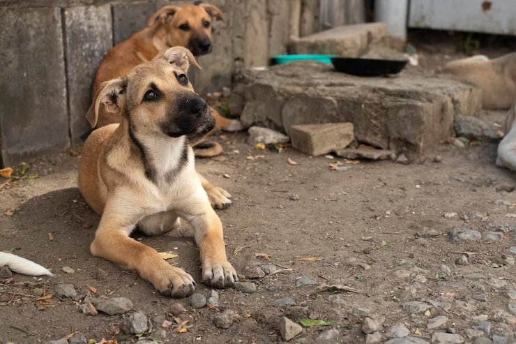

CONOCE A BENITO!

Hace algún tiempo, encontramos a Benito en una situación que nos rompió el corazón. Vagaba solo por las calles,
buscando desesperadamente comida entre la basura, con su cuerpo reducido a piel y huesos, y sus ojos apagados
por el abandono. No podíamos quedarnos de brazos cruzados. Decidimos rescatarlo, brindarle el amor, los cuidados
médicos y la alimentación que tanto necesitaba.
Desde ese momento, nuestra vida y la de Benito cambiaron por completo. Lo vimos transformarse poco a poco: su pelaje
volvió a brillar, su mirada se llenó de esperanza, y su energía nos demostró que aún tenía mucho amor para dar.
Benito es un perro noble, tierno y agradecido. Se ha ganado el corazón de todos los que lo han conocido, y hoy,
con mucha emoción pero también con responsabilidad, estamos buscando para él un hogar definitivo.
No estamos simplemente dando en adopción a un perro. Estamos confiando a Benito a una nueva familia que entienda su
historia, valore su segunda oportunidad y lo acompañe en esta nueva etapa con respeto, cariño y compromiso. Si estás
dispuesto(a) a abrir tu corazón y tu hogar, Benito podría ser el compañero de vida que has estado esperando.